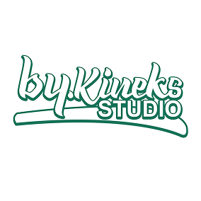
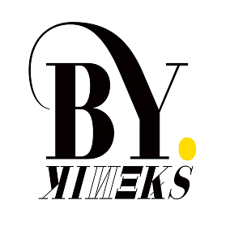
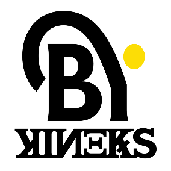
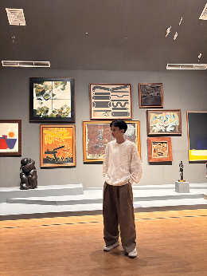

We build
type systems for
modern design.
Bykineks is an independent type foundry focused on building comprehensive type systems with clarity, function, and lasting value.
A continuous journey
to create better type.
Every step shapes how we design, create, and grow.
Here’s how Bykineks evolved.
Discovering type design.
Bykineks began as a personal exploration, creating our first made font, Zara. A journey of curiosity to understand the form, structure, and possibilities of letters.

Expressing through
type system.
Arshila marked our growth into display & editorial typography. More styles, more voices, and a stronger identity as a type foundry.

Clarity for readability
and digital future.
Kineks Text is our step toward clarity, designed for readability, UI, and digital experiences across languages and devices.

Why we do what we do
Bykineks is an independent type foundry based in Indonesia, dedicated to developing typographic systems for branding, editorial, and digital experiences. We believe that a typeface should never stand alone. Every project is designed as part of a broader system, connecting multiple styles, functions, and classifications through a shared visual DNA. This approach allows each release to grow into cohesive font families and superfamilies that work seamlessly across a wide range of design applications. With a strong emphasis on readability, visual character, multilingual support, and advanced OpenType features, Bykineks develops typefaces that adapt across languages and media without compromising consistency. More than designing fonts, Bykineks builds typographic systems that enable designers and brands to create clearer, more cohesive, and enduring visual communication.

Dede Kurniawan is an Indonesian type designer and the founder of Bykineks Type Foundry. His interest in typography began in 2016 after discovering a piece of chalk lettering on a classroom blackboard during high school. What started as curiosity soon became years of exploring hand lettering through self directed learning and commissioned projects, shaping his understanding of letterforms, rhythm, and visual expression. Driven by a desire to push lettering beyond the page, Dede later explored calligraffiti and street art.
While studying Visual Communication Design, a lecturer challenged him to see typography not simply as artistic expression, but as a design system capable of solving communication problems. That perspective became the turning point that led him to pursue type design. Since establishing Bykineks Type Foundry, Dede has focused on creating multilingual typefaces, extensive font families, and superfamilies that combine clarity, personality, and versatility.
From 2023 to 2026, he worked as a Type Designer at Indotype, further strengthening his professional practice before completing a Master’s degree in Management, where he expanded his knowledge of branding, marketing, and business strategy. Today, Dede’s work centers on building typographic systems rather than standalone typefaces. Through Bykineks, he believes that typography should provide designers and brands with cohesive visual tools that remain adaptable across languages, media, and evolving design needs.